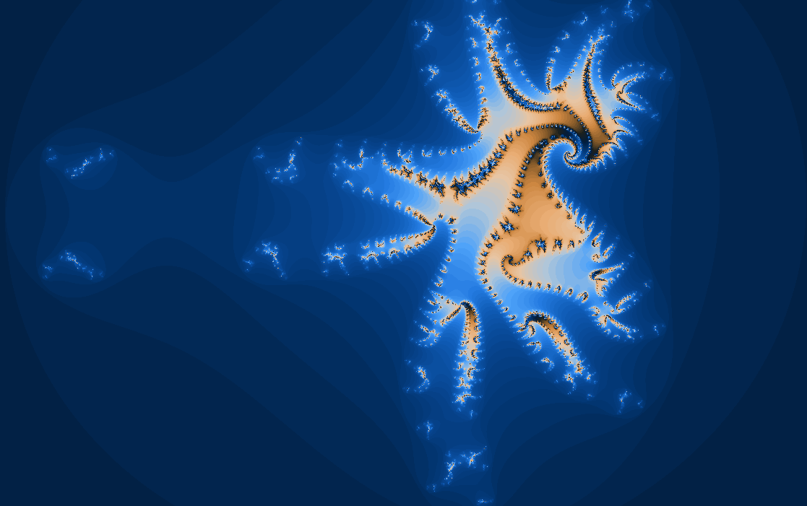
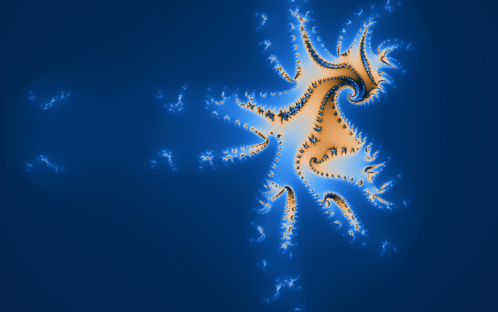
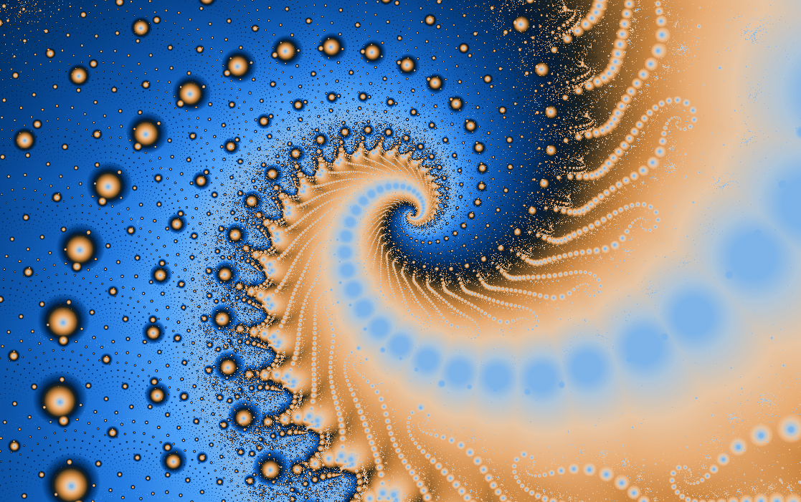
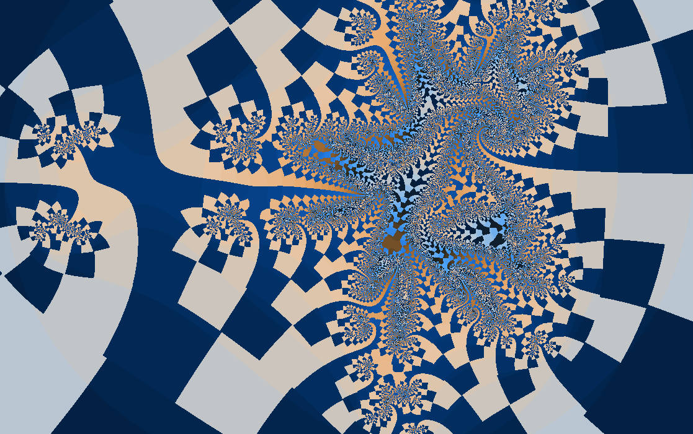
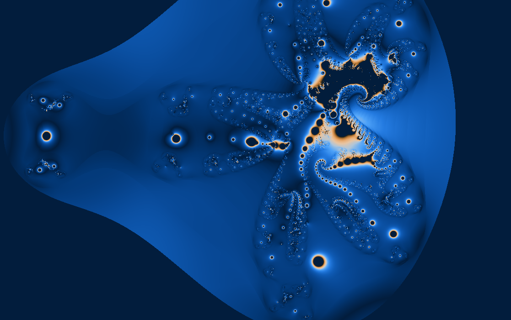
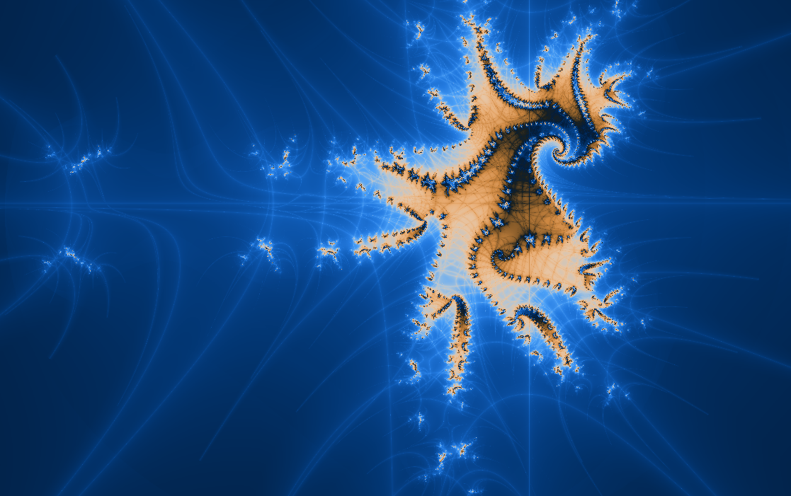

Dynamical plane
Manowar Julia
A Julia set with a short-term memory.
\(z_{n+1}=z_n^2+m_n+k\)
Here the parameter is fixed and each pixel chooses the starting value. Because the Manowar rule remembers the previous step, the orbit can feel less like a point jumping and more like a point dragging a thread.
This fractal was created by Scott Taylor and Lee Skinner for FractInt.

What to try first
Pick a boundary point and enable orbit display. Notice that the next step depends on both the current point and its predecessor.
Change the fixed parameter from the control panel. Look for transitions between connected masses and scattered fragments.
Use triangle inequality coloring when you want the exterior to show motion instead of bands.
Mathematical notes
Fixed parameter, remembered past
The Manowar Julia rule fixes \(k\) and iterates \(z_{n+1}=z_n^2+m_n+k\). The memory value \(m_n\) is updated from the previous \(z\). Unlike a standard Julia set, the visible fate of a point depends on a two-value state.
Coloring lenses
The set stays the same, but each rendering method asks a different question about the orbit.


Gaussian integer
Measures how closely escaping orbits pass near the complex integer lattice.
Apply in wxChaos

Triangle inequality
Turns relationships inside the orbit into layered, topographic texture.
Apply in wxChaos
Orbit traps
Colors points by how closely their orbits pass near the real and imaginary axes.
Apply in wxChaos